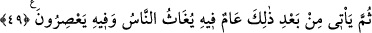

olduğunu ortaya koyan rüyanın geri kalan yorumuna başlayarak şöyle dedi:
48. Sonra bunun ardından, saklayacaklarınızdan az bir miktar (tohumluk) hariç, o
yıllar için biriktirdiklerinizi yiyip bitirecek yedi kıtlık yılı gelecektir.
“Sonra bunun” yani mezkur senelerin “ardından saklayacaklarınızdan az bir
miktar” tohumluk olarak sakladıklarınız “hariç, o yıllar için biriktirdiklerinizi yiyip
bitirecek yedi kıtlık yılı gelecektir.” Yani başaklarında bıraktığınız bu hubûbatı o
yıllarda yaşayanlar yerler. Bu ifadesiyle Yûsuf, verdiği bu emrin zarûret zamanı için
geçerli olduğuna dikkat çekmektedir.
Hubûbatı o yıllarda yaşayan insanlar yedikleri halde âyetin ‘yeme’ fiilini yıllara isnad
etmesi, tıpkı “Onun gündüzleri oruçludur.” örneğinde olduğu gibi mecâzîdir. Burada
ayrıca bu ifadenin rüyadaki o zayıf ineklerin yeme tarzlarının tâbiri olduğuna işaret
vardır. Yani bir nevi başaklarda biriktirilen hubûbat, -tıpkı gelen misafirlere takdim
edilen ikram gibi- hazırlanıp yıllara takdim edilmiş oluyor. Oysa bu hubûbat gerçekte o
yıllarda yaşayan insanlara takdim edilecektir.
49. Sonra bunun ardından da bir yıl gelecek ki, o yılda insanlara (Allah
tarafından) yardım olunacak ve o yılda (meyve suyu ve yağ) sıkacaklar.
“Sonra bunun” yani kuraklık ve insanların biriktirilen hubûbatı yiyeceği vasıflarla
anlatılan bu yılların “ardından da bir yıl gelecek ki, o yılda insanlara bol yağmur
yağdırılır” ya da kuraklıktan ve sıkıntıdan kurtarılırlar “ve o yılda” sıkılabilme
özelliği olan üzüm, susam, zeytin, kamış ve çeşitli meyvelerden çok olacağı için bol bol
meyve suyu ve yağ “sıkacaklar.”
“Fîhi” ifadesinin tekrarlanması, yağmur yağdırma veya kurtarma fiillerinin Allah’a,
sıkma fiilinin ise insanlara âid olmasından ileri gelmiştir.
Bu bereketli kılınan seneyle ilgili hükümleri Yûsuf (a.s.) kralın rüyasından
çıkarmamış, sırf vahiy yoluyla elde etmiş ve bunları insanlara müjdelemiştir.
Yûsuf (a.s.) semiz ineklerle yeşil başakları verimli seneler olarak, zayıf ineklerle kuru
başakları da kurak seneler olarak yorumlamıştır. Zayıf ineklerin semiz inekleri yemesini
ise bu bolluk senelerinde biriktirilen mahsûlün kurak senelerde yenmesi şeklinde tâbir
etmiştir. Bu şöyle izah edilebilir: Hayvan cinsleri arasında çelimsizlik vasfı taşıyan,